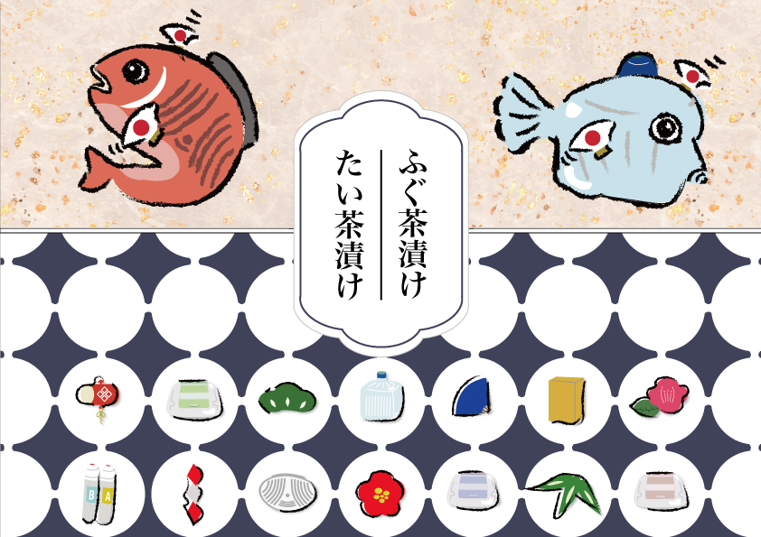

お茶漬けのパッケージ案
制作時期：2024年9月
制作時間：7時間
使用ツール：Illustrator・Photoshop
取引先へお送りするお歳暮の、”たい茶漬け”・”ふぐ茶漬け”のパッケージ案を検討しました。
鯛を水受けトレイ、フグを水ボトルに、それぞれウォーターサーバーの周辺グッズに紛した姿で描くことが
決まり、オリジナルキャラクターを作成しました。
お歳暮ということで和風のテイストを意識し、縁起物の柄を散りばめたり、ウォーターサーバーの関連グッ
ズを柄として散りばめ、"ウォーターサーバーの会社"としてのイメージが損なわれないように意識しました。
オリジナルパッケージのためフリー素材を使わず、イラストは全てIllustoratorでパスや図形を用いて自作
しています。